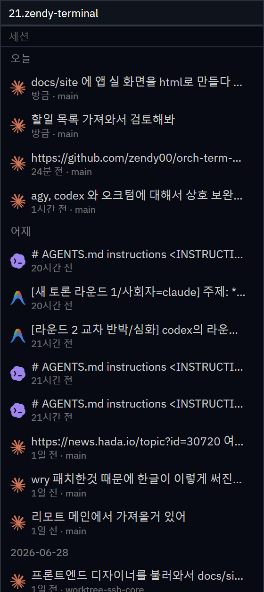

핵심 기능 · 세션 목록
세션 목록 (이어가기)
사이드바 5번째 모드 "세션"으로, 활성 프로젝트에서 진행한 AI CLI 에이전트(claude · codex · agy) 대화를 한곳에 모아 보고 클릭 한 번으로 이어갑니다. orchterm이 따로 기록하지 않고, 세 CLI가 디스크에 남기는 transcript 사이드카를 직접 읽습니다(parse-don't-ask).
세션 패널 열기
사이드바 모드바의 세션 아이콘이나 Ctrl+Shift+S로 엽니다(명령 팔레트의 "세션"도 가능). 목록은 활성 프로젝트(현재 폴더) 전용이라 프로젝트를 바꾸면 그 프로젝트의 세션이 나옵니다.
목록 — 날짜 그룹 · 에이전트 아이콘 · 메타
세션은 최신순으로 정렬되어 날짜 그룹(오늘 / 어제 / YYYY-MM-DD)으로 묶입니다. 각 행은 어떤 CLI인지 알려주는 브랜드 아이콘 + 제목(첫 사용자 메시지) + 상대시각 + (있으면) git 브랜치를 보여줍니다.

이어가기 — 원래 폴더에서 재개
행을 클릭하면 그 세션의 원래 작업 폴더(cwd)에서 새 터미널 탭으로 대화를 재개합니다. CLI별로 알맞은 명령을 자동으로 실행합니다.
| 에이전트 | 이어가기 명령 |
|---|---|
| claude | claude --resume <id> |
| codex | codex resume <id> |
| agy | antigravity --conversation <id> |
⚠️ 이어가기는 해당 CLI(claude · codex · antigravity)가 시스템 PATH에 있어야 동작합니다.
권한 우회 — 승인 없이 이어가기
세션 패널 헤더의 권한 우회 체크박스를 켜면, 이어가기 시 각 CLI에 맞는 위험 권한 우회 플래그를 자동으로 붙여 폴더 트러스트·툴 승인 프롬프트 없이 바로 재개합니다. 체크 상태는 저장되어 앱을 재시작해도 유지됩니다(기본값은 꺼짐).
| 에이전트 | 이어가기 명령 (권한 우회 켜짐) |
|---|---|
| claude | claude --dangerously-skip-permissions --resume <id> |
| codex | codex --dangerously-bypass-approvals-and-sandbox resume <id> |
| agy | antigravity --dangerously-skip-permissions --conversation <id> |
⚠️ 권한 우회는 무인 실행을 위한 비권장·위험 옵션입니다 — 켜면 에이전트가 승인 없이 파일 쓰기·명령 실행을 합니다. 기본값은 꺼짐(안전 모드)이니 신뢰하는 프로젝트에서만 켜세요. 체크를 해제하면 기존처럼 최초 1회 폴더 트러스트 승인을 거칩니다.
증분 표시 · 로딩바
- 증분 표시(페이지네이션) — 한 번에 20개만 그리고 하단 "더 보기 (남은 N)"로 +20. 조회는 1회(프로젝트당 최대 500개)이고, 더 보기는 이미 받은 목록을 더 그릴 뿐이라 즉시 반응합니다(재조회 없음).
- 로딩바 — 조회를 시작하면 목록을 비우고 패널 안에 진행바("세션 불러오는 중…")를 띄웠다가 결과가 도착하면 교체합니다.
- 활성 프로젝트 스코프 — 목록은 활성 프로젝트 1개 기준입니다. 프로젝트를 추가·전환·제거하면 즉시 다시 불러옵니다.
크로스플랫폼 · 어떻게 찾나
세 CLI가 남기는 transcript 경로(~/.claude/projects · ~/.codex/sessions · ~/.gemini/antigravity-cli/history.jsonl)는 Windows·macOS·Linux에서 동일합니다. 활성 프로젝트와 같은 폴더에서 진행된 세션만 골라내며, 경로 비교는 OS 규약대로 정규화합니다(Windows만 소문자화). 백엔드는 DB와 무관한 순수 파일시스템 스캐너로, 세 어댑터 모두 JSONL을 파싱합니다.
단축키
| 키 | 동작 |
|---|---|
| Ctrl+Shift+S | 세션 모드 열기 (mac Cmd+Shift+S) |
| Ctrl+Shift+P | 명령 팔레트 → "세션(Sessions)" |